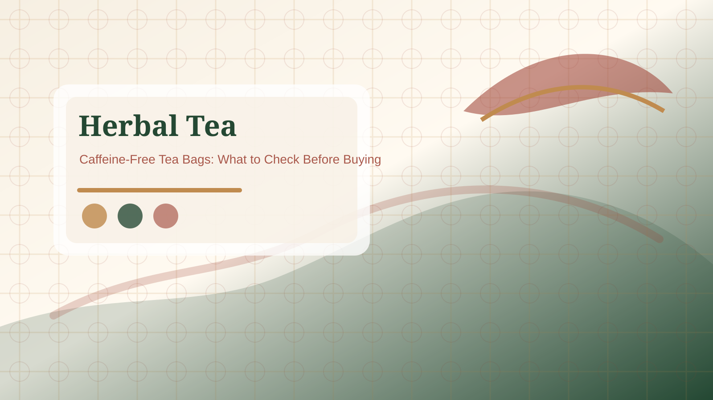

Naturally caffeine free
Usually points to ingredients that are not caffeinated tea leaves, but still check the full blend.

Read caffeine-free wording carefully before choosing a herbal tea bag for evening, office, gift, or daily use.
Quick Answer: Check whether the label says naturally caffeine free, decaffeinated, or simply herbal infusion. Then read the ingredient list for black tea, green tea, yerba mate, guayusa, cocoa, or other ingredients that may affect caffeine expectations.


Naturally caffeine free usually means the ingredients are not from caffeinated tea leaves. Decaffeinated usually means caffeine has been reduced from a tea ingredient. Herbal infusion may describe the format or category, but it is still worth checking the full ingredient list. These phrases are close enough to confuse shoppers, so treat the exact label wording as part of the buying decision.
Black tea, green tea, oolong, white tea, yerba mate, guayusa, cocoa, and some blended flavor bases can change caffeine expectations. If the page or box only says calm, evening, wellness, or herbal, do not stop there. Read the ingredient list and any caffeine statement before using the tea at night or buying it for someone else.
If caffeine sensitivity, pregnancy, medication, health conditions, or allergy concerns are involved, use qualified advice and the product's official information. This FAQ explains label-reading habits; it does not guarantee that a product is right for every person.
For sensitive use, read more than the large front label. Check the ingredient list for tea leaves, mate, guayusa, cocoa, or energizing blend language. Check whether the seller gives a caffeine statement in the product details, not only in an image. If the tea is for evening use, a gift, pregnancy, medication concerns, or a caffeine-sensitive person, choose the clearest label rather than the most decorative box. When in doubt, use the manufacturer's information or qualified advice.
If the product page does not clearly say whether the tea is caffeine free, do not assume. Look for official packaging photos, manufacturer details, or a clearer alternative. For gifts, office use, and evening routines, uncertainty creates avoidable friction. A slightly plainer box with a transparent caffeine statement is often the better choice than a decorative product with vague wording.
Reference: NCCIH herbs and supplement safety overview.
Usually points to ingredients that are not caffeinated tea leaves, but still check the full blend.
Usually means caffeine has been reduced from a tea ingredient; it may not mean zero caffeine.
Often describes a non-tea-leaf beverage, but the ingredient list is still the source to verify.
No. Many herbal infusions are caffeine free, but some blends include caffeinated tea, mate, or other ingredients.
No. Decaffeinated usually means caffeine has been reduced; naturally caffeine free means the ingredients normally do not contain caffeine.
Check the caffeine statement, ingredient list, serving instructions, and any warning language.
No. Use product information and qualified advice for personal health, medication, pregnancy, or sensitivity questions.